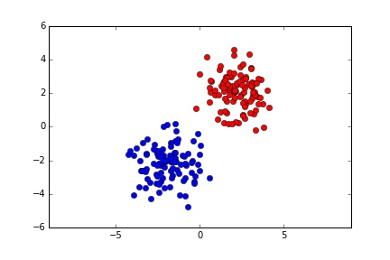
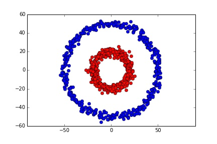

$\color{green}{\mathfrak{Spectral}} \ \color{pink}{\mathfrak{Clustering}}$
$\text{Created by}$ $\text{Babak Ahmadi}$
$\text{Shiraz University}$
$\text{Results}$
| $\text{data}$ | $\text{KPCA}$ | $\text{LDA}$ | $\text{ICA}$ | $\text{UBSRDF}$ | $\text{SBSRDF}$ |
|---|---|---|---|---|---|
| $\text{Wine}$ | $\text{98.} \pm \text{2.59}$ | $\text{98.3} \pm \text{2.59}$ | $\text{94.96} \pm \text{5.24}$ | $\text{98.88} \pm \text{2.22}$ | $\text{98.33} \pm \text{2.54}$ |
| $\text{Glass}$ | $\text{56.99} \pm \text{11.14}$ | $\text{56.94} \pm \text{8}$ | $\text{56.70} \pm \text{11.86}$ | $\text{60.41} \pm \text{10.86}$ | $\text{53.35} \pm \text{7.81}$ |
| $\text{Iris}$ | $\text{92.66} \pm \text{6.28}$ | $\text{98} \pm \text{3.05}$ | $\text{96.66} \pm \text{6.14}$ | $\text{95.33} \pm \text{5.20}$ | $\text{96} \pm \text{4.42}$ |
| $\text{WaweForm}$ | $\text{83.69} \pm \text{1.24}$ | $\text{82.58} \pm \text{1.82}$ | $\text{82.07} \pm \text{1.28}$ | $\text{83.32} \pm \text{1.78}$ | $\text{83.85} \pm \text{2.28}$ |
| $\text{WDBC}$ | $\text{87.86} \pm \text{3.90}$ | $\text{96.83} \pm \text{1.3}$ | $\text{87.16} \pm \text{4.54}$ | $\text{91.56} \pm \text{2.20}$ | $\text{92.61} \pm \text{3.83}$ |
| $\text{USPS}$ | $\text{65.87} \pm \text{1.22}$ | $\text{92.30} \pm \text{.88}$ | $\text{79.83} \pm \text{1.52}$ | $\text{80.90} \pm \text{1.62}$ | $\text{86.31} \pm \text{1.35}$ |
| $\text{Sonar}$ | $\text{75.07} \pm \text{12.20}$ | $\text{73.47} \pm \text{6.52}$ | $\text{64.50} \pm \text{10.48}$ | $\text{77.33} \pm \text{5.98}$ | $\text{79.33} \pm \text{6.37}$ |
$\text{Results: Hybrid Samples}$
| $\text{data}$ | $\text{KPCA}$ | $\text{LDA}$ | $\text{ICA}$ | $\text{UBSRDF}$ | $\text{SBSRDF}$ |
|---|---|---|---|---|---|
| $\text{Heart}$ | $\text{0.5569} \pm \text{0.0795}$ | $\text{0.5259} \pm \text{0.1237}$ | $\text{0.5623} \pm \text{0.0897}$ | $\text{0.7325} \pm \text{0.0497}$ | $\text{0.7617} \pm \text{0.0771}$ |
| $\text{Statlog}$ | $\text{0.6074} \pm \text{0.1196}$ | $\text{0.7962} \pm \text{0.0763}$ | $\text{0.7296} \pm \text{0.0620}$ | $\text{0.7518} \pm \text{0.0907}$ | $\text{0.7555} \pm \text{0.0814}$ |
| $\text{German}$ | $\text{0.5596} \pm \text{0.0934}$ | $\text{0.5131} \pm \text{0.0923}$ | $\text{0.5333} \pm \text{0.0777}$ | $\text{0.7199} \pm \text{0.0778}$ | $\text{0.7150} \pm \text{0.0300}$ |
| $\text{Dermatology}$ | $\text{0.8742} \pm \text{0.0664}$ | $\text{0.9607} \pm \text{0.0312}$ | $\text{0.78499} \pm \text{0.0860}$ | $\text{0.8826} \pm \text{0.0708}$ | $\text{0.9023} \pm \text{0.0849}$ |
$\text{Graph Notations}$
$ G = (V,E) $
$ V = \{v_1,v_2,...,v_n\} $
$ W = (w_{ij})_{i,j=1,...,n} $
$$ d_i = \sum_{j=0}^n w_{ij} $$
$$ W(A,B) := \sum_{i\in A,j\in B} w_{ij} $$ $$ vol(A) := \sum_{i\in A} d_i $$
$\text{Similarity Graphs}$
- $\epsilon\text{-neighborhood graph}$
- $\text{we connect all points whose pairwise distances are smaller than } \epsilon$
- $\text{1- $\epsilon$ = max weight in MST.} $
- $\text{2- $\epsilon$ = mean weight of kth neighbours. }$
- $k\text{-nearest neighbor graph}$
-
$\color{yellow}{\text{find first $k$ neighbors for each vertex}}$
- $k\text{-nearest neighbors}$
- $\text{mutual $k$-nearest neighbor}$
- $\text{fully connected graph}$
-
$\text{between each two points we add edge based on some functions}$
$$s(x_i,x_j) = exp(\frac{-||x_i-x_j||^2}{2\sigma^2})$$ - $\text{Proximity Graph}$
-
$\text{Relative Neighborhood Graph: }d_{ij} \le max\{ d_{ip},d_{jp} \}$
$\text{Gabriel Graph: } d_{ij} \le min\{ \sqrt{d_{ip}^2 + d_{pj}^2} \}$

$\text{Graph Laplacian}$
- $ L = D - W $
- $\text{ $L$ is symmetric and positive semi-definite}$
- $ f^TLf = \frac{1}{2} \sum_{i,j=1}^n w_{ij}(f_i-f_j)^2 \ \ \ (?)$
- $\lambda_1=0 \text{ and } v_1 = 1 $
- $ 0 = \lambda_1 \le \lambda_2 \le ... \le \lambda_n$
$\color{pink}{\text{Proof:}}$
$$ f^TLf = f^TDf - f^TWf \\ = \sum_{i=1}^n d_i f_i^2 - \sum_{i,j=1}^n f_i f_j w_{ij} \\ = \frac{1}{2} (\sum_{i=1}^n d_i f_i^2 - 2 \sum_{i,j=1}^n f_if_j w_{ij} + \sum_{j=1}^n d_j f_j^2) \\ = \frac{1}{2} \sum_{i,j=1}^n w_{ij}(f_i-f_j)^2. $$$\color{pink}{\text{number of clusters:}}$
$$ 0 = f^TLf = \sum_{i,j=1}^n w_{ij}(f_i-f_j)^2$$$\color{pink}{\text{block view:}}$
$$ L = \begin{pmatrix} L_1 & \cdots & 0 \\ \vdots & \ddots & 0 \\ 0 & 0 & L_k \\ \end{pmatrix} $$$\color{pink}{\text{Normalized Laplacian:}}$
$L_{sym}$ $ := D^{-1/2}LD^{-1/2} \\ = I - D^{-1/2}WD^{-1/2} $$L_{rw}$ $ := D^{-1}L \\ = I - D^{-1}W $
- $ f^T L_{sym} f = \frac{1}{2} \sum_{i,j=1}^n w_{ij} (\frac{f_i}{\sqrt{d_i}} - \frac{f_j}{\sqrt{d_j}})^2$
- $ \text{$\lambda$ and $u$ of $L_{rw}$ exists iff: } \color{yellow}{Lu = \lambda D u}$
- $\lambda \text{ and } u \text{ of } L_{rw} \text{ iff } : \lambda \text{ and } \color{yellow}{(w= D^{1/2}u)} \text{ of } L_{sym}$
- $\text{number of connected components is like unnormalized Laplacian}$
$\text{Spectral Clustering Algorithms}$
$\color{pink}{\text{Unnormalized spectral clustering:}}$
Input:Similarity matrix $S \in R^{nxn}$ , number $k$ of clusters to construct.
- Construct a similarity graph. Let W be its weighted adjacency matrix.
- Compute the unnormalized Laplacian $L$.
- Compute the first k eigenvectors $u_1, ... , u_k$ of $L$.
- Let $U \in R^{n×k}$ be the matrix containing the vectors $u_1, ... , u_k$ as columns.
- For $i = 1, ... , n$, let $y_{ik}$ be the vector corresponding to the i-th row of $U$.
- Cluster the points $(y_i)i=1,...,n$ in $k$ with the $k$-means algorithm intoclusters $C_1, ... , C_k$.
Output: Clusters $A_1, . . . , A_k$ with $A_i = \{j | y_j \in C_i \}$.
$\color{pink}{\text{Normalized spectral clustering(Shi, Malik):}}$
Input:Similarity matrix $S \in R^{nxn}$ , number $k$ of clusters to construct.
- Construct a similarity graph.Let $W$ be its weighted adjacency matrix.
- Compute the unnormalized Laplacian $L$.
- Compute the first $k$ eigenvectors $u_1, . . . , u_k$ of the generalized eigenproblem $Lu = \lambda Du$.
- Let $U \in R^{n×k}$ be the matrix containing the vectors $u_1, . . . , u_k$ as columns.
- For $i = 1, ... , n$, let yi k be the vector corresponding to the i-th row of $U$.
- Cluster the points $(y_i)i=1,...,n$ in $k$ with the $k$-means algorithm into clusters $C_1, . . . , C_k$.
Output: Clusters $A_1, . . . , A_k$ with $A_i = \{j | y_j \in C_i \}$.
$\color{pink}{\text{Normalized spectral clustering(Ng, Jordan):}}$
Input:Similarity matrix $S \in R^{nxn}$ , number $k$ of clusters to construct.
- Construct a similarity graph. Let $W$ be its weighted adjacency matrix.
- Compute the normalized Laplacian $L_{sym}$.
- Compute the first k eigenvectors $u_1, ... , u_k$ of $L_{sym}$.
- Let $U \in R^{n×k}$ be the matrix containing the vectors $u_1, ... , u_k$} as columns.
- Form the matrix $T \in R^{n×k}$ from $U$ by normalizing the rows to norm $1$, that is set $t_{ij}=u_{ij}/(\sum_k u_{ik}^2)^{1/2}$
- For $i = 1, ... , n$, let $y_i \in R^k$ be the vector corresponding to the i-th row of $T$.
- Cluster the points $(y_i)_{i=1,...,n}$ with the $k$-means algorithm into clusters $C_1, ... , C_k$.
Output: Clusters $A_1, . . . , A_k$ with $A_i = \{j | y_j \in C_i \}$.
$\color{green}{\text{Similarity to kernel PCA (Use W instead of L)}}$
$\text{Two Gaussian}$
$\text{dataset:}$
$\text{eigenValues:}$
.jpg)
.jpg)
.jpg)
$\text{eigenVectors:}$
.jpg)
.jpg)
.jpg)
$\text{representation:}$
.jpg)
.jpg)
.jpg)
$\text{Two Disks}$
$\text{dataset:}$
$\text{eigenValues:}$
.jpg)
.jpg)
.jpg)
$\text{eigenVectors:}$
.jpg)
.jpg)
.jpg)
$\text{representation:}$
.jpg)
.jpg)
.jpg)
$\text{Two parabola}$
$\text{dataset:}$
$\text{eigenValues:}$
.jpg)
.jpg)
.jpg)
$\text{eigenVectors}$:
.jpg)
.jpg)
.jpg)
$\text{representation:}$
.jpg)
.jpg)
.jpg)
$\text{Graph Cut}$


$$ Ncut(A_1,...,A_k) := \frac{1}{2} \sum_{i=1}^k \frac{W(A_i, \overline A_i)}{vol(A_i)} = \color{yellow}{\sum_{i=1}^k \frac{cut(A_i,\overline A_i)}{vol(A_i)} } $$
$\text{RatioCut}$
$ \color{pink}{\text{assume:} } \\$
$$ f_i = \begin{cases} \sqrt{\frac{| \overline A|}{|A|} }, & \text{if } v_i \in A \\[2ex] -\sqrt{\frac{|A|}{| \overline A|} }, & \text{if } v_i \in \overline A \end{cases}$$$ \color{pink}{\text{two Constraints:}} \\$
$$ \sum_{i=1}^n f_i = \sum_{i \in A} \sqrt \frac{|\overline A|}{|A|} - \sum_{i \in \overline A} \sqrt \frac{|A|}{|\overline A|} = |A| \sqrt \frac{|\overline A|}{|A|} - |\overline A| \sqrt \frac{|A|}{|\overline A|} = 0. \\ $$ $$ ||f||^2 = \sum_{i=1}^n f_i^2 = |A|\frac{|\overline A|}{|A|} + |\overline A|\frac{|A|}{|\overline A|} = |\overline A| + |A| = n. $$$ \color{pink}{\text{standard Model:} } \\ \\$
$$ \color{green}{\min\limits_{A \subset V} f^TLf} \\ \\ \text{subject to: } \begin{cases} f \bot \Bbb{1} \\ f_i = \sqrt{\frac{| \overline A|}{|A|} } \ or \ -\sqrt{\frac{|A|}{| \overline A|} } \\ ||f|| = \sqrt n \end{cases} $$$ \color{pink}{\text{with relaxation:} } \\ \\$
$$ \color{green}{\min\limits_{A \subset V} f^TLf} \\ \\ \text{subject to: } \begin{cases} f \bot \Bbb{1} \\ ||f|| = \sqrt n \end{cases} $$$\text{RatioCut for arbitrary $k$}$
$\color{pink}{\text{assume:}}$
$$ h_{i,j} = \begin{cases} \frac{1}{\sqrt{|A_j|}} & \text{if } v_i \in A_j \\ 0 & \text{otherwise} \end{cases} \ \ \ (i= 1,...,n; j=1,...,k) $$$\color{pink}{\text{then:}}$
$$ h_i^TLh_i = \frac{cut(A_i,\overline A_i)}{|A_i|} \\ h_i^TLh_i = (H^TLH)_{ii} $$$\color{pink}{\text{Standard Form:}}$
$$ \color{green}{\min\limits_{A_1,A_2,...,A_k} Tr(H^TLH)} \\ \\ \text{subject to: } \begin{cases} H^TH = I \\ h_{ij} = \frac{1}{\sqrt{|A_j|}} \text{ or } 0. \end{cases} $$$\color{pink}{\text{Relaxation:}}$
$$ \color{green}{\min\limits_{A_1,A_2,...,A_k} Tr(H^TLH)} \\ \\ \text{subject to: } \begin{cases} H^TH = I \end{cases} $$$\text{Ncut}$
$ \color{pink}{\text{assume:} } \\$
$$ f_i = \begin{cases} \sqrt{\frac{vol(\overline A)}{vol(A)} } & \text{if } v_i \in A \\[2ex] -\sqrt{\frac{vol(A)}{vol(\overline A)} } & \text{if } v_i \in \overline A \end{cases}$$$ \color{pink}{\text{standard Model:} } \\ \\$
$$ \color{green}{\min\limits_{f \in R^n} f^TLf} \\ \\ \text{subject to: } \begin{cases} f_i = \sqrt{\frac{vol(\overline A)}{vol(A)} } \ or \ -\sqrt{\frac{vol(A)}{vol(\overline A)} } \\ Df \bot 1 \\ f^TDf = vol(V) \end{cases} $$$ \color{pink}{\text{with relaxation:} } \\ \\$
$$ \color{green}{\min\limits_{f \in R^n} f^TLf} \\ \\ \text{subject to: } \begin{cases} Df \bot 1 \\ f^TDf = vol(V) \end{cases} $$$ \color{pink}{\text{by:} }$
$$ g := D^{1/2} f $$$ \color{pink}{\text{we have:} }$
$$ \color{green}{\min\limits_{g \in R^n } g^T D^{-1/2} L D^{-1/2}g } \\ \\ \text{subject to: } \begin{cases} g \bot D^{1/2}1 \\ ||g||^2 = vol(V) \end{cases} $$$ \color{pink}{\text{some hint:} }$
- $L_{sym} = D^{-1/2}LD^{-1/2}$
- $D^{1/2}1 \text{is the first eigenVector of $L_sym$.}$
- $\text{vol(V) is constant.}$
- $\text{solution: second eigenvector of $L_sym$}$
- $ \color{yellow}{f = D^{-1/2} g} : \text{$f$ is second eigenvector of $L_{rw}$} \\ \text{or generalized eigenvector of } Lu = \lambda Du$
$\text{Ncut for arbitrary $k$}$
$\color{pink}{\text{assume:}}$
$$ h_{i,j} = \begin{cases} \frac{1}{\sqrt{vol(A_j)}} & \text{if } v_i \in A_j \\ 0 & \text{otherwise} \end{cases} \ \ \ (i= 1,...,n; j=1,...,k) $$$\color{pink}{\text{Standard Form:}}$
$$ \color{green}{\min\limits_{A_1,A_2,...,A_k} Tr(H^TLH)} \\ \\ \text{subject to: } \begin{cases} H^TDH = I \\ h_{ij} = \frac{1}{\sqrt{vol(A_j)}} \text{ or } 0. \end{cases} $$$\color{pink}{\text{Relaxation and }T = D^{1/2}H:}$
$$ \color{green}{\min\limits_{A_1,A_2,...,A_k} Tr(T^TD{-1/2}LD{-1/2}T)} \\ \\ \text{subject to: } \begin{cases} T^TT = I \end{cases} $$$\text{Relaxation Approach:}$
$\color{pink}{\text{different between } \\ \text{ideal solution and relaxed one:}}$


$\color{pink}{\text{Gauttery and Miller 98:}}$

$\color{pink}{\text{Different Relaxations:}}$
- $\text{semi-difinite program (Bie and Cristiani-2006)}$
- $\text{nearest subspace(Jordan, Bach-JMLR 2006)}$
$\text{Random Walk:}$
$\color{pink}{\text{random walk and Ncut:}}$
$$ Ncut(A,\overline A) = P(\overline A|A) + P(A|\overline A) $$$\color{pink}{\text{Prove:}}$
$$ P(X_0 \in A, X_1 \in B) = \sum_{i \in A, j \in B} P(X_0=i,X_1 = j) = \sum_{i \in A, j \in B} \pi_i p_{ij}\\ = \sum_{i \in A, j \in B} \frac{d_i}{vol(V)}\frac{w_{ij}}{d_i} = \frac{1}{vol(V)} \sum_{i \in A, j \in B} w_ij. $$$\text{commute distance:}$
$\text{Perturbation Theory:}$
$$ |A| := \text{the number of vertices in $A$} $$
$$ vol(A) := \sum_{i\in A} d_i $$
for i in range(10):
print 'hello World'
Math Formula
$\cos (2\theta) = \cos^2 \theta - \sin^2 \theta$Hello There
reveal.js enables you to create beautiful interactive slide decks using HTML. This presentation will show you examples of what it can do.
Vertical Slides
Slides can be nested inside of each other.
Use the Space key to navigate through all slides.
Basement Level 1
Nested slides are useful for adding additional detail underneath a high level horizontal slide.
Basement Level 2
That's it, time to go back up.
Slides
Not a coder? Not a problem. There's a fully-featured visual editor for authoring these, try it out at http://slides.com.
Point of View
Press ESC to enter the slide overview.
Hold down alt and click on any element to zoom in on it using zoom.js. Alt + click anywhere to zoom back out.
Touch Optimized
Presentations look great on touch devices, like mobile phones and tablets. Simply swipe through your slides.
Fragments
Hit the next arrow...
... to step through ...
... a fragmented slide.
Fragment Styles
There's different types of fragments, like:
grow
shrink
fade-out
current-visible
highlight-red
highlight-blue
Transition Styles
You can select from different transitions, like:
None -
Fade -
Slide -
Convex -
Concave -
Zoom
Themes
reveal.js comes with a few themes built in:
Black (default) -
White -
League -
Sky -
Beige -
Simple
Serif -
Blood -
Night -
Moon -
Solarized
Slide Backgrounds
Set data-background="#dddddd" on a slide to change the background color. All CSS color formats are supported.
Image Backgrounds
<section data-background="image.png">Tiled Backgrounds
<section data-background="image.png" data-background-repeat="repeat" data-background-size="100px">Video Backgrounds
<section data-background-video="video.mp4,video.webm">... and GIFs!
Background Transitions
Different background transitions are available via the backgroundTransition option. This one's called "zoom".
Reveal.configure({ backgroundTransition: 'zoom' })Background Transitions
You can override background transitions per-slide.
<section data-background-transition="zoom">Pretty Code
function linkify( selector ) {
if( supports3DTransforms ) {
var nodes = document.querySelectorAll( selector );
for( var i = 0, len = nodes.length; i < len; i++ ) {
var node = nodes[i];
if( !node.className ) {
node.className += ' roll';
}
}
}
}
Code syntax highlighting courtesy of highlight.js.
Marvelous List
- No order here
- Or here
- Or here
- Or here
Fantastic Ordered List
- One is smaller than...
- Two is smaller than...
- Three!
Tabular Tables
| Item | Value | Quantity |
|---|---|---|
| Apples | $1 | 7 |
| Lemonade | $2 | 18 |
| Bread | $3 | 2 |
Clever Quotes
These guys come in two forms, inline:
“The nice thing about standards is that there are so many to choose from”
and block:
“For years there has been a theory that millions of monkeys typing at random on millions of typewriters would reproduce the entire works of Shakespeare. The Internet has proven this theory to be untrue.”
Intergalactic Interconnections
You can link between slides internally, like this.
Speaker View
There's a speaker view. It includes a timer, preview of the upcoming slide as well as your speaker notes.
Press the S key to try it out.
Export to PDF
Presentations can be exported to PDF, here's an example:
Global State
Set data-state="something" on a slide and "something"
will be added as a class to the document element when the slide is open. This lets you
apply broader style changes, like switching the page background.
State Events
Additionally custom events can be triggered on a per slide basis by binding to the data-state name.
Reveal.addEventListener( 'customevent', function() {
console.log( '"customevent" has fired' );
} );
Take a Moment
Press B or . on your keyboard to pause the presentation. This is helpful when you're on stage and want to take distracting slides off the screen.
Much more
- Right-to-left support
- Extensive JavaScript API
- Auto-progression
- Parallax backgrounds
- Custom keyboard bindings